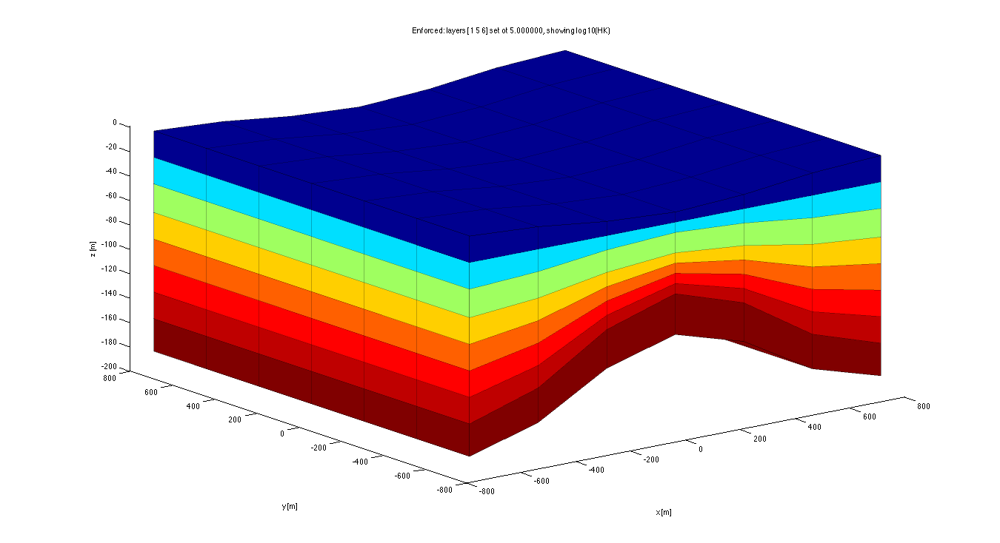
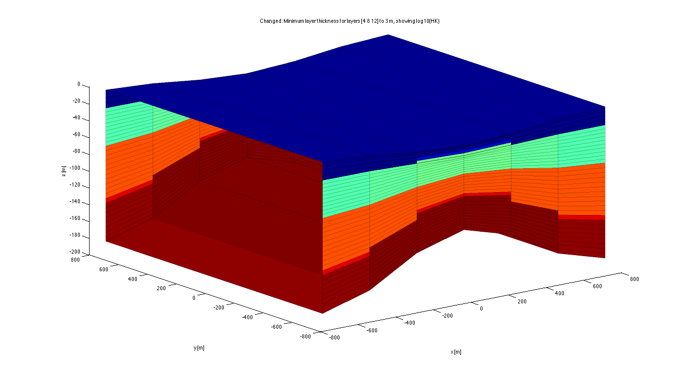
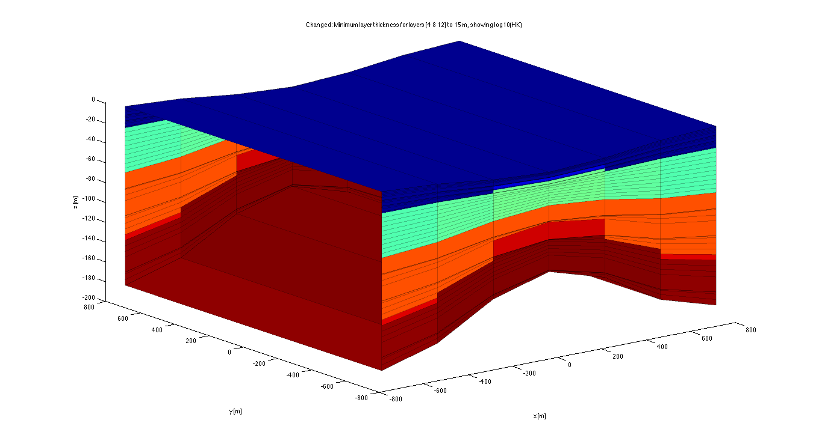

Tutorial of modelObj
This file teaches and verifies the modelObj for use in manipulating models TO 120829
Contents
- Introduction
- Initialize
- Set name of this model
- what is a modelOb and what ia Model in this context?
- How to create modelObj's?
- Demo
- Generate HK and VK
- Generate a Model consisting of 3 empty model array objects
- Fill this model
- verify what happend to the variables
- using methods
- Convert CBD to LAY
- Further grid manipulation
- Fix right-hand boundary of model using CHD (environmental head) and STCONC
- get wells
- Grid resampling
- Join rows in y-direction
- Show the wells in this box, rotate the box (by hand) to see them
- Show the wells
- Set min thickness for somelayers
- Set min thickness for somelayers
- Start working in the workspace
- Show all actions done to generate the Model
Introduction
We will generate a Model consisting of an array of modelObj each containing a variable such as HK, VK, PEF, STRTHD, STCONC, IBOUND, RIV, GHB, grid, well etc, and will manipulate it by changing minimum layer thickness, joining and merging of layers and resampling the entire model to a completely new grid. We do this to demonstrate the various methods and to verify them where possible.
Initialize
clear variables; close all;
Set name of this model
basename='modelObjTutor'; save name basename
what is a modelOb and what ia Model in this context?
a modelObj is a class whose instantionation (actual model) is as struct with three fields: * name % the name of the variable like 'HK', 'gr', 'RIV' etc * var % the actual variable, i.e.HK, gr, RIV etc * type % the mflab type of the variable like '3Dlay', 'gridObj', 'stress'
A Model is then just an array of modelObj instantiations.
The class has members, i.e. a set of functions shared by all modelObj's and it has properties that have different values between the individual modelObj's.
show what is in class modelObj
modelObj
ans =
modelObj
Properties:
data: []
description: []
name: []
var: []
type: []
UserData: []
How to create modelObj's?
See help modelObj Call the modelObj constructor
Model(10) = modelObj(); %yields an Model consisting of 10 empty modelObj
in general call with arguments and limits: Model = modelObj(data,xlim,ylim,Ilay);
where data is * the directory holding the arrays constituting the model in matfiles such that the name of the mat file is the name of the varariable it contains (say HK in HK.mat), and that the contents of the matfile is the variable itself with this name, so HK, plus a second variable with the name and the word type attached to it, so here 'HKtype' having as content a string with the mfLab type of the variable, i.e. here '3Dlay' meaning a 3D array with a layer for each model layer. Other types are '3Dcbd' (3D array with a later for each confining bed), '3Dtime' for RECH, with one layer for each stress period, 'stress' for RIV,GHB,DRN,CHD, 'zlist' for variables like HANI with one value for each layer, 'gridObj' for grid objects, 'wellObj' for an array of well objects and possibly more. * an array of modelObj, i.e. another model, which may have been saved for instance by save MyModel.mat Model earlier and is now retrieved by load MyModel and passed to the modelObj. Ix,Iy,Iz are the indices along the rows, columns and layers which are to be extracted, in case a submodel is desired. These fields are optional, if omitted the entire model is used.
Demo
Generate a grid
xGr = -750:250:750; xm=0.5*(xGr(1:end-1)+xGr(2:end));
yGr = -750:250:750; ym=0.5*(yGr(1:end-1)+yGr(2:end));
z = [0 -25 -50 -75 -100 -125 -150 -175 -200]';
zm= [-20 -25 -30 -45 -50 -55 -60 -65 -100]';
Z = repmat(permute(interp1([xGr(1) mean(xGr) xGr(end)],[z zm z]',xm)',[3,2,1]),[length(ym),1,1]);
% These parameters are optional
MINDZ=0.1;
AXIAL=0;
LAYCBD=0;
the grid
gr = gridObj(xGr,yGr,Z,LAYCBD,MINDZ,AXIAL);
size of grid
gr.size
ans =
6 6 8
Generate HK and VK
hk= (1:gr.Nlay)'; %hk(3)=25/1000;
vk= hk;
HK = gr.const(hk);
VK = gr.const(vk);
Generate a Model consisting of 3 empty model array objects
Model(3) = modelObj();
Fill this model
Model(1).name = 'HK'; Model(1).var = HK; Model(1).type = '3Dlay'; Model(2).name ='VK'; Model(2).var = VK; Model(2).type = '3Dlay'; Model(3).name = 'gr'; Model(3).var = gr; Model(3).type = 'gridObj';
Now model is an array of 3 modelObj with some properties filled, see
Model(1) Model(2) Model(3)
ans =
modelObj
Properties:
data: []
description: []
name: 'HK'
var: [6x6x8 double]
type: '3Dlay'
UserData: []
ans =
modelObj
Properties:
data: []
description: []
name: 'VK'
var: [6x6x8 double]
type: '3Dlay'
UserData: []
ans =
modelObj
Properties:
data: []
description: []
name: 'gr'
var: [1x1 gridObj]
type: 'gridObj'
UserData: []
to see the names of the variables
{Model.name} %#ok
ans =
'HK' 'VK' 'gr'
and their mfLab types
{Model.type} %#ok
ans =
'3Dlay' '3Dlay' 'gridObj'
or use display
display({Model.type});
'3Dlay' '3Dlay' 'gridObj'
save this model
save Model Model; whos
Name Size Bytes Class Attributes AXIAL 1x1 8 double HK 6x6x8 2304 double LAYCBD 1x1 8 double MINDZ 1x1 8 double Model 1x3 7759 modelObj VK 6x6x8 2304 double Z 6x6x9 2592 double ans 1x3 370 cell basename 1x13 26 char gr 1x1 3001 gridObj hk 8x1 64 double vk 8x1 64 double xGr 1x7 56 double xm 1x6 48 double yGr 1x7 56 double ym 1x6 48 double z 9x1 72 double zm 9x1 72 double
clear the workspace
clear; whos
load the model
load Model
whos
gr = Model.grid();
Name Size Bytes Class Attributes Model 1x3 7759 modelObj
to cutout a submodel
xlim = gr.xGr([2 end-1]); ylim=gr.yGr([2 end-1]); subModel = modelObj(Model,xlim,ylim);
size of the new submodel
grSub = subModel.grid();
size of old grid
gr.size
ans =
6 6 8
size of new grid
grSub.size
ans =
4 4 8
verify what happend to the variables
fprintf('Model(1):\n');
Model(1)
Model(1):
ans =
modelObj
Properties:
data: []
description: []
name: 'HK'
var: [6x6x8 double]
type: '3Dlay'
UserData: []
fprintf('subModel(1):\n');
subModel(1)
subModel(1):
ans =
modelObj
Properties:
data: []
description: []
name: 'HK'
var: [4x4x8 double]
type: '3Dlay'
UserData: []
clear subModel grSub;
using methods
Note that most methods work on all objects of the modelObj array, so even though Model is just an array of modelObj, the modelObj methods are generally called like this Model= Model.descr('another string'); To obtain a new Model array (overwriting the old) with changed properties. The methods (in this case descr) is applied to all objects in the object array Model.
compute transmissivity and HK at specified cell indices or every where if omited
Ix = 3; Iy= 2; [kD,Hk] = Model.transm(Ix,Iy);
same for vertical hydraulic resistance and VK
[c ,Vk] = Model.resistance(Ix,Iy);
these methods have been combined in the script verify to display these variables for all layers together for a selected Ix and Iy
Model = Model.descr('Initialized: Model with HK VK'); verify % see verify by typing: edit verify
Initialized: Model with HK VK
layer DZ kD HK c VK
1 8.33333 8.33333 1 8.33333 1
2 8.33333 16.6667 2 4.16667 2
3 16.6667 50 3 5.55556 3
4 8.33333 33.3333 4 2.08333 4
5 8.33333 41.6667 5 1.66667 5
6 8.33333 50 6 1.38889 6
7 8.33333 58.3333 7 1.19048 7
8 33.3333 266.667 8 4.16667 8
total: 100 525 28.5516
append a string to Model.description proper
Model = Model.descr('Loaded: Full model Model.mat from disk');
Show the model and use the last description line in the title
Model.showBox(Model(1).description{1});

if you like you may save the model so far save Model00 Model
Convert CBD to LAY
If the model was essentially made for the BCF package it can be changed to the LPF package by Model = Model.CBF2LPF();
for transport models it is strongly advised to remove confining beds and to change them into regular model layers:
Model = Model.removeCBD();
Model= Model.descr('Removed: confining beds');
Model.showBox(Model(1).description{end});
verify;
Removed: confining beds
layer DZ kD HK c VK
1 8.33333 8.33333 1 8.33333 1
2 8.33333 16.6667 2 4.16667 2
3 16.6667 50 3 5.55556 3
4 8.33333 33.3333 4 2.08333 4
5 8.33333 41.6667 5 1.66667 5
6 8.33333 50 6 1.38889 6
7 8.33333 58.3333 7 1.19048 7
8 33.3333 266.667 8 4.16667 8
total: 100 525 28.5516
Further grid manipulation
to adapt the mininum thickness of layers:
MINDZ = 5; layers = [1 5 6]; % given layers at least 1 MINDZ thick Model = Model.mindz(MINDZ,layers); Model= Model.descr(sprintf('Enforced: layers [1 5 6] set ot %f',MINDZ)); Model.showBox(Model(1).description{end}); verify;
mindz:
Previous minimum layer thickness and new ones per layer, changed layers: layer start end
1 8.33333 8.33333
2 8.33333 8.33333
3 16.6667 16.6667
4 8.33333 8.33333
5 8.33333 8.33333
6 8.33333 8.33333
7 8.33333 8.33333
8 26.6667 26.6667
Enforced: layers [1 5 6] set ot 5.000000
layer DZ kD HK c VK
1 8.33333 8.33333 1 8.33333 1
2 8.33333 16.6667 2 4.16667 2
3 16.6667 50 3 5.55556 3
4 8.33333 33.3333 4 2.08333 4
5 8.33333 41.6667 5 1.66667 5
6 8.33333 50 6 1.38889 6
7 8.33333 58.3333 7 1.19048 7
8 33.3333 266.667 8 4.16667 8
total: 100 525 28.5516
 update grid in workspace
gr = Model.grid();
Generate a STRTHD array
dhdx= 1/500; % head gradient in x-direction
strthd = 0 + dhdx*(gr.xm - gr.xm(1));
STRTHD = repmat(strthd,[gr.Ny,1,gr.Nz]);
add to Model
Model(end+1) = modelObj(); Model(end).name = 'STRTHD'; Model(end).var = STRTHD; Model(end).type = '3Dlay'; Model = Model.descr('Added: STRTHD');
Generate the IBOUND array
IBOUND = gr.const(1);
add to Model
Model(end+1) = modelObj(); Model(end).name = 'IBOUND'; Model(end).var = IBOUND; Model(end).type = '3Dlay'; Model = Model.descr('Added: IBOUND');
Fix right-hand boundary of model using CHD (environmental head) and STCONC
iWest = 2; % arbitrary zone number not equal to 0 or 1 iEast = 3; % arbitrary zone number not equal to 0 or 1 CHDOPT= 2; % option to intepret specified heads as environmental heads in SEAWAT
use IBOUND as zone array (optional)
IBOUND(:,end,:)=iEast; % put zone number at right hand cells IBOUND(:, 1,:)=iWest; % put zone number at left hand cells hE = STRTHD(IBOUND==iEast); hW = STRTHD(IBOUND==iWest); zoneVals = {iEast hE hE CHDOPT; % one line per zone iWest hW hW CHDOPT};
Generate CHD list
basename = 'modelObjTutor'; CHD = gr.bcnZone(basename,'CHD',IBOUND,zoneVals);
Add to the Model
Model(end+1) = modelObj(); Model(end).name = 'CHD'; Model(end).var = CHD; Model(end).type = 'stress'; Model = Model.descr('Added: CHD stress list');
get wells
[~,HK] = Model.transm(); well=gr.well(basename,HK,'wells'); Model(end+1) = modelObj(); Model(end).name = 'well'; Model(end).var = well; Model(end).type = 'wellObj'; Model = Model.descr('Added: wells');
Join some layers of the original model, while keeping total transmisivity and vertical hydraulic resistance.
joinArray tells which of the old layers are merged in each new layer:
joinArray=[1 2 3 4 5 6 7 8; % Old Layer Nrs 1 2 2 3 3 3 4 4] ; % New Layer Nrs Model = Model.merge('join',joinArray,'z'); % coarsen grid in z-direction Model = Model.descr('Joined: layers [1 2 3] and [4 5] too thin or irrelevant for the density problem.'); verify;
Processing wells ...Elapsed time is 0.022268 seconds.
done
Joined: layers [1 2 3] and [4 5] too thin or irrelevant for the density problem.
layer DZ kD HK c VK
1 8.33333 8.33333 1 8.33333 1
2 25 66.6667 2.66667 9.375 2.66667
3 25 125 5 5 5
4 41.6667 325 7.8 5.34188 7.8
total: 100 525 28.0502
split ome layers to get more vertical detail
splitArray = [1 2 3 4; % old layer numbers 3 5 2 3]; % each split in this number of new layers display(splitArray);
splitArray =
1 2 3 4
3 5 2 3
split it
Model = Model.merge('split',splitArray,'z'); Model = Model.descr('Split: layers 1-->3,3-->5'); verify;
Processing wells ...Elapsed time is 0.021148 seconds.
done
Split: layers 1-->3,3-->5
layer DZ kD HK c VK
1 2.77778 2.77778 1 2.77778 1
2 2.77778 2.77778 1 2.77778 1
3 2.77778 2.77778 1 2.77778 1
4 5 13.3333 2.66667 1.875 2.66667
5 5 13.3333 2.66667 1.875 2.66667
6 5 13.3333 2.66667 1.875 2.66667
7 5 13.3333 2.66667 1.875 2.66667
8 5 13.3333 2.66667 1.875 2.66667
9 12.5 62.5 5 2.5 5
10 12.5 62.5 5 2.5 5
11 13.8889 108.333 7.8 1.78063 7.8
12 13.8889 108.333 7.8 1.78063 7.8
13 13.8889 108.333 7.8 1.78063 7.8
total: 100 525 28.0502
Grid resampling
completely resample the grid using planes to keep in gr.Z and the number of subdivisions between each pair of kept planes. A plane is a layer surface, a model has one plane more than the number of layers and confining beds combined. Plane 1 is omitted, the last plane is implied but obliged if used. The number of planes equals the number of subdivisions specified.
Adapt the grid by a complete resampling
gr = Model.grid();
planesToKeep = [ 2 4 9 gr.Nz+1];
subdivisions = [ 5 10 10 20];
Model= Model.changeLayers( planesToKeep, subdivisions);
Model = Model.descr('Changed: layers using planes to keep and subdivisions');
Model.showBox(Model(1).description{end});
verify;
changeLayers: converting variable HK of type 3Dlay
changeLayers: converting variable VK of type 3Dlay
changeLayers: converting variable gr of type gridObj
changeLayers: converting variable STRTHD of type 3Dlay
changeLayers: converting variable IBOUND of type 3Dlay
changeLayers: converting variable CHD of type stress
changeLayers: converting variable well of type wellObj
Changed: layers using planes to keep and subdivisions
layer DZ kD HK c VK
1 0.555556 0.555556 1 0.555556 1
2 0.555556 0.555556 1 0.555556 1
3 0.555556 0.555556 1 0.555556 1
4 0.555556 0.555556 1 0.555556 1
5 0.555556 0.555556 1 0.555556 1
6 0.555556 0.555556 1 0.555556 1
7 0.555556 0.555556 1 0.555556 1
8 0.555556 0.555556 1 0.555556 1
9 0.555556 0.555556 1 0.555556 1
10 0.555556 0.555556 1 0.555556 1
11 0.555556 0.555556 1 0.555556 1
12 0.555556 0.555556 1 0.555556 1
13 0.555556 0.555556 1 0.555556 1
14 0.555556 0.555556 1 0.555556 1
15 0.555556 0.555556 1 0.555556 1
16 2.5 6.66667 2.66667 0.9375 2.66667
17 2.5 6.66667 2.66667 0.9375 2.66667
18 2.5 6.66667 2.66667 0.9375 2.66667
19 2.5 6.66667 2.66667 0.9375 2.66667
20 2.5 6.66667 2.66667 0.9375 2.66667
21 2.5 6.66667 2.66667 0.9375 2.66667
22 2.5 6.66667 2.66667 0.9375 2.66667
23 2.5 6.66667 2.66667 0.9375 2.66667
24 2.5 6.66667 2.66667 0.9375 2.66667
25 2.5 6.66667 2.66667 0.9375 2.66667
26 3.33333 16.6667 5 0.666667 5
27 3.33333 16.6667 5 0.666667 5
28 3.33333 16.6667 5 0.666667 5
29 3.33333 16.6667 5 0.666667 5
30 3.33333 16.6667 5 0.666667 5
31 3.33333 16.6667 5 0.666667 5
32 3.33333 16.6667 5 0.666667 5
33 3.33333 21.3333 6.4 0.520833 6.4
34 3.33333 26 7.8 0.42735 7.8
35 3.33333 26 7.8 0.42735 7.8
36 3.33333 26 7.8 0.42735 7.8
37 3.33333 26 7.8 0.42735 7.8
38 3.33333 26 7.8 0.42735 7.8
39 3.33333 26 7.8 0.42735 7.8
40 3.33333 26 7.8 0.42735 7.8
41 3.33333 26 7.8 0.42735 7.8
42 3.33333 26 7.8 0.42735 7.8
43 3.33333 26 7.8 0.42735 7.8
44 3.33333 26 7.8 0.42735 7.8
45 3.33333 26 7.8 0.42735 7.8
total: 100 525 28.024
Join rows in y-direction
All rows in y direction are joined to obtain a cross section model in the x-direction. The join array is used to tell which of the old layers will be in each of the new layers. To join them all, the join array has numbers 1 through gr.Ny in the first rows (all rows) and all 1 in the seconde, meaning that all the top rows will become the first row of the new model.
joinArray= [1:gr.Ny; % row numbers current grid ones(1,gr.Ny)]; % row numbers new grid Model = Model.merge('join',joinArray,'y'); % join in y-direction Model = Model.descr('Joined: all rows (y direction) to get a cross section representative for a given width.'); Model.showBox(Model(1).description{end}); Ix = 1; Iy=1; verify;
Processing wells ...Elapsed time is 0.021234 seconds.
done
Joined: all rows (y direction) to get a cross section representative for a given width.
layer DZ kD HK c VK
1 0.555556 0.555556 1 0.555556 1
2 0.555556 0.555556 1 0.555556 1
3 0.555556 0.555556 1 0.555556 1
4 0.555556 0.555556 1 0.555556 1
5 0.555556 0.555556 1 0.555556 1
6 0.555556 0.555556 1 0.555556 1
7 0.555556 0.555556 1 0.555556 1
8 0.555556 0.555556 1 0.555556 1
9 0.555556 0.555556 1 0.555556 1
10 0.555556 0.555556 1 0.555556 1
11 0.555556 0.555556 1 0.555556 1
12 0.555556 0.555556 1 0.555556 1
13 0.555556 0.555556 1 0.555556 1
14 0.555556 0.555556 1 0.555556 1
15 0.555556 0.555556 1 0.555556 1
16 2.5 6.66667 2.66667 0.9375 2.66667
17 2.5 6.66667 2.66667 0.9375 2.66667
18 2.5 6.66667 2.66667 0.9375 2.66667
19 2.5 6.66667 2.66667 0.9375 2.66667
20 2.5 6.66667 2.66667 0.9375 2.66667
21 2.5 6.66667 2.66667 0.9375 2.66667
22 2.5 6.66667 2.66667 0.9375 2.66667
23 2.5 6.66667 2.66667 0.9375 2.66667
24 2.5 6.66667 2.66667 0.9375 2.66667
25 2.5 6.66667 2.66667 0.9375 2.66667
26 3.33333 16.6667 5 0.666667 5
27 3.33333 16.6667 5 0.666667 5
28 3.33333 16.6667 5 0.666667 5
29 3.33333 16.6667 5 0.666667 5
30 3.33333 16.6667 5 0.666667 5
31 3.33333 16.6667 5 0.666667 5
32 3.33333 16.6667 5 0.666667 5
33 3.33333 21.3333 6.4 0.520833 6.4
34 3.33333 26 7.8 0.42735 7.8
35 3.33333 26 7.8 0.42735 7.8
36 3.33333 26 7.8 0.42735 7.8
37 3.33333 26 7.8 0.42735 7.8
38 3.33333 26 7.8 0.42735 7.8
39 3.33333 26 7.8 0.42735 7.8
40 3.33333 26 7.8 0.42735 7.8
41 3.33333 26 7.8 0.42735 7.8
42 3.33333 26 7.8 0.42735 7.8
43 3.33333 26 7.8 0.42735 7.8
44 3.33333 26 7.8 0.42735 7.8
45 3.33333 26 7.8 0.42735 7.8
total: 100 525 28.024
Show the wells in this box, rotate the box (by hand) to see them
The wells are plotted in 3D and are visible in the model by rotating the model in the figure by hand (use 3D rotation tool in top of figure window).
gr.plotWells(gca,Model(strmatchi('wellObj',{Model.type})).var); % plot 3D in existing figure
Show the wells
Turn the model to better show the wells (by hand using the 3D rotation tool in the tool bar at the top of the figure screen
Get start concentration distribution using function
cFresh = 0; cSea = 1; SigmaX = 0; SigmaZ = 50; zc = -120; xc = 0; STCONC = getInitialSalinity(gr,cFresh,cSea,xc,zc,SigmaX,SigmaZ);
Add STCONC to model arrays by appending a modelObj to Model. This way any new information can be added to the current Model, like even its computed heads and concentrations.
Model(end+1) = modelObj(); % append anempty modelObj Model(end).name = 'STCONC'; % with name of the new variable Model(end).var = STCONC; % the variable itself Model(end).type = '3Dlay'; % and the variable type Model = Model.descr('Added: Initial salinity distribution (STCONC).');
Set min thickness for somelayers
MINDZ = 3; layers = [4 8 12];
Model = Model.mindz(MINDZ,layers);
Model = Model.descr(sprintf('Changed: Minimum layer thickness for layers [4 8 12] to %g m',MINDZ));
Model.showBox(Model(1).description{end});
verify;
done;
mindz:
Previous minimum layer thickness and new ones per layer, changed layers: layer start end
1 0.555556 0.555556
2 0.555556 0.555556
3 0.555556 0.555556
4 0.555556 0.555556
5 0.555556 3
6 0.555556 0.1
7 0.555556 0.1
8 0.555556 0.1
9 0.555556 2.7
10 0.555556 0.1
11 0.555556 0.1
12 0.555556 0.1
13 0.555556 2.9
14 0.555556 0.1
15 0.555556 0.1
16 2.5 1.85556
17 2.5 0.444444
18 2.5 1.55556
19 2.5 2.5
20 2.5 2.5
21 2.5 2.5
22 2.5 2.5
23 2.5 2.5
24 2.5 2.5
25 2.5 2.5
26 3.33333 3.33333
27 3.33333 3.33333
28 3.33333 3.33333
29 3.33333 3.33333
30 3.33333 3.33333
31 3.33333 3.33333
32 3.33333 3.33333
33 3.33333 3.33333
34 3.33333 3.33333
35 3.33333 3.33333
36 3.33333 3.33333
37 3.33333 3.33333
38 3.33333 3.33333
39 3.33333 3.33333
40 3.33333 3.33333
41 3.33333 3.33333
42 3.33333 3.33333
43 3.33333 3.33333
44 3.33333 3.33333
45 3.33333 3.33333
Changed: Minimum layer thickness for layers [4 8 12] to 3 m
layer DZ kD HK c VK
1 0.555556 0.555556 1 0.555556 1
2 0.555556 0.555556 1 0.555556 1
3 0.555556 0.555556 1 0.555556 1
4 0.555556 0.555556 1 0.555556 1
5 3 3 1 3 1
6 0.1 0.1 1 0.1 1
7 0.1 0.1 1 0.1 1
8 0.1 0.1 1 0.1 1
9 2.7 3.25676 1.20621 2.23842 1.20621
10 0.333333 0.402299 1.2069 0.27619 1.2069
11 0.222222 0.273308 1.22989 0.180685 1.22989
12 0.1 0.127778 1.27778 0.0782609 1.27778
13 2.9 7.70036 2.6553 1.09216 2.6553
14 0.1 0.265965 2.65965 0.037599 2.65965
15 0.1 0.266359 2.66359 0.0375433 2.66359
16 1.85556 4.94815 2.66667 0.695833 2.66667
17 0.444444 1.18519 2.66667 0.166667 2.66667
18 1.55556 4.14815 2.66667 0.583333 2.66667
19 2.5 6.66667 2.66667 0.9375 2.66667
20 2.5 6.66667 2.66667 0.9375 2.66667
21 2.5 6.66667 2.66667 0.9375 2.66667
22 2.5 6.66667 2.66667 0.9375 2.66667
23 2.5 6.66667 2.66667 0.9375 2.66667
24 2.5 6.66667 2.66667 0.9375 2.66667
25 2.5 6.66667 2.66667 0.9375 2.66667
26 3.33333 16.6667 5 0.666667 5
27 3.33333 16.6667 5 0.666667 5
28 3.33333 16.6667 5 0.666667 5
29 3.33333 16.6667 5 0.666667 5
30 3.33333 16.6667 5 0.666667 5
31 3.33333 16.6667 5 0.666667 5
32 3.33333 16.6667 5 0.666667 5
33 3.33333 21.3333 6.4 0.520833 6.4
34 3.33333 26 7.8 0.42735 7.8
35 3.33333 26 7.8 0.42735 7.8
36 3.33333 26 7.8 0.42735 7.8
37 3.33333 26 7.8 0.42735 7.8
38 3.33333 26 7.8 0.42735 7.8
39 3.33333 26 7.8 0.42735 7.8
40 3.33333 26 7.8 0.42735 7.8
41 3.33333 26 7.8 0.42735 7.8
42 3.33333 26 7.8 0.42735 7.8
43 3.33333 26 7.8 0.42735 7.8
44 3.33333 26 7.8 0.42735 7.8
45 3.33333 26 7.8 0.42735 7.8
total: 100 524.763 27.7871
done
 Set min thickness for somelayers
a more extreme change of minimum layer thickness. Note that underlying layers will be compressed and end up having minimum layer thickness equal to gr.MINDZ. This small correction may cause the total transmissivity and resistance to change a small amount.
MINDZ = 15; layers = [25 30 40];
Model = Model.mindz(MINDZ,layers);
Model = Model.descr(sprintf('Changed: Minimum layer thickness for layers [4 8 12] to %g m',MINDZ));
Model.showBox(Model(1).description{end});
verify;
done;
mindz:
Previous minimum layer thickness and new ones per layer, changed layers: layer start end
1 0.555556 0.555556
2 0.555556 0.555556
3 0.555556 0.555556
4 0.555556 0.555556
5 3 3
6 0.1 0.1
7 0.1 0.1
8 0.1 0.1
9 2.7 2.7
10 0.1 0.1
11 0.1 0.1
12 0.1 0.1
13 2.9 2.9
14 0.1 0.1
15 0.1 0.1
16 1.85556 1.85556
17 0.444444 0.444444
18 1.55556 1.55556
19 2.5 2.5
20 2.5 2.5
21 2.5 2.5
22 2.5 2.5
23 2.5 2.5
24 2.5 2.5
25 2.5 2.5
26 3.33333 15.8333
27 3.33333 0.1
28 3.33333 0.1
29 3.33333 0.1
30 3.33333 0.533333
31 3.33333 15
32 3.33333 0.1
33 3.33333 0.1
34 3.33333 0.1
35 3.33333 0.1
36 3.33333 2.1
37 3.33333 3.33333
38 3.33333 3.33333
39 3.33333 3.33333
40 3.33333 3.33333
41 3.33333 15
42 3.33333 0.1
43 3.33333 0.1
44 3.33333 0.1
45 3.33333 1.36667
Changed: Minimum layer thickness for layers [4 8 12] to 15 m
layer DZ kD HK c VK
1 0.555556 0.555556 1 0.555556 1
2 0.555556 0.555556 1 0.555556 1
3 0.555556 0.555556 1 0.555556 1
4 0.555556 0.555556 1 0.555556 1
5 3 3 1 3 1
6 0.1 0.1 1 0.1 1
7 0.1 0.1 1 0.1 1
8 0.1 0.1 1 0.1 1
9 2.7 3.25676 1.20621 2.23842 1.20621
10 0.333333 0.402299 1.2069 0.27619 1.2069
11 0.222222 0.273308 1.22989 0.180685 1.22989
12 0.1 0.127778 1.27778 0.0782609 1.27778
13 2.9 7.70036 2.6553 1.09216 2.6553
14 0.1 0.265965 2.65965 0.037599 2.65965
15 0.1 0.266359 2.66359 0.0375433 2.66359
16 1.85556 4.94815 2.66667 0.695833 2.66667
17 0.444444 1.18519 2.66667 0.166667 2.66667
18 1.55556 4.14815 2.66667 0.583333 2.66667
19 2.5 6.66667 2.66667 0.9375 2.66667
20 2.5 6.66667 2.66667 0.9375 2.66667
21 2.5 6.66667 2.66667 0.9375 2.66667
22 2.5 6.66667 2.66667 0.9375 2.66667
23 2.5 6.66667 2.66667 0.9375 2.66667
24 2.5 6.66667 2.66667 0.9375 2.66667
25 2.5 6.66667 2.66667 0.9375 2.66667
26 15.8333 79.1667 5 3.16667 5
27 0.1 0.5 5 0.02 5
28 0.1 0.5 5 0.02 5
29 0.1 0.5 5 0.02 5
30 0.533333 2.66667 5 0.106667 5
31 17.5 113.167 6.46667 2.70619 6.46667
32 0.1 0.681176 6.81176 0.0146805 6.81176
33 0.1 0.736923 7.36923 0.0135699 7.36923
34 0.1 0.78 7.8 0.0128205 7.8
35 0.1 0.78 7.8 0.0128205 7.8
36 2.1 16.38 7.8 0.269231 7.8
37 3.33333 26 7.8 0.42735 7.8
38 3.33333 26 7.8 0.42735 7.8
39 3.33333 26 7.8 0.42735 7.8
40 3.33333 26 7.8 0.42735 7.8
41 15 117 7.8 1.92308 7.8
42 0.1 0.78 7.8 0.0128205 7.8
43 0.1 0.78 7.8 0.0128205 7.8
44 0.1 0.78 7.8 0.0128205 7.8
45 1.36667 10.66 7.8 0.175214 7.8
total: 100 524.621 27.6802
done
 Start working in the workspace
Put all model arrays into workspace
unpack;
Putting HK of mfLab type 3Dlay in the workspace Putting VK of mfLab type 3Dlay in the workspace Putting gr of mfLab type gridObj in the workspace Putting STRTHD of mfLab type 3Dlay in the workspace Putting IBOUND of mfLab type 3Dlay in the workspace Putting CHD of mfLab type stress in the workspace Putting well of mfLab type wellObj in the workspace Putting STCONC of mfLab type 3Dlay in the workspace
Show all actions done to generate the Model
Note that all saved models can be retrieved via load Modelxx where xx the number used when saved. By calling Model.descr a print will be made of all actions taken to genereate the particular model:
Model.descr;
Actions taken to generate this model: 1: Initialized: Model with HK VK 2: Loaded: Full model Model.mat from disk 3: Removed: confining beds 4: Enforced: layers [1 5 6] set ot 5.000000 5: Added: STRTHD 6: Added: IBOUND 7: Added: CHD stress list 8: Added: wells 9: Joined: layers [1 2 3] and [4 5] too thin or irrelevant for the density problem. 10: Split: layers 1-->3,3-->5 11: Changed: layers using planes to keep and subdivisions 12: Joined: all rows (y direction) to get a cross section representative for a given width. 13: Added: Initial salinity distribution (STCONC). 14: Changed: Minimum layer thickness for layers [4 8 12] to 3 m 15: Changed: Minimum layer thickness for layers [4 8 12] to 15 m